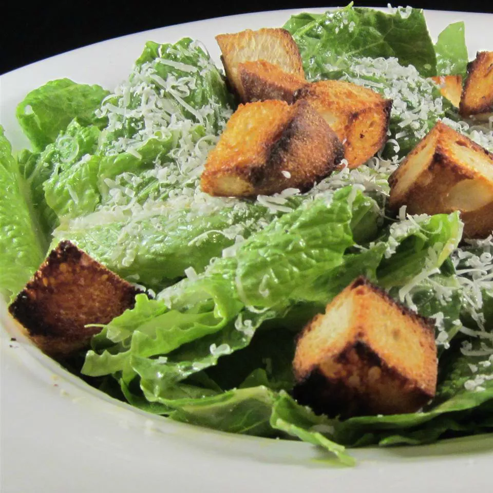

Caesar Salad

Caesar Salad is a tossed salad usually made of romaine, garlic, anchovies, and croutons and dressed with olive oil, coddled egg, lemon juice, and grated cheese
Here are the ingredients to make our Caesar Salad ;
- 2 cloves garlic, finely chopped
- 3 anchovy fillets
- ½ lemon, juiced
- 2 tablespoons red wine vinegar
- 1 tablespoon Dijon mustard
- 1 egg yolk
- 1 dash Worcestershire sauce
- ¼ cup olive oil
- 1 pinch salt and ground black pepper to taste
- ½ head romaine lettuce, chopped
- ¼ cup grated Parmesan cheese
- 2 tablespoons croutons
Now let's go through our steps to make Caesar Salad ;
- Mash garlic with anchovies in a large salad bowl. Whisk lemon juice, red wine vinegar, Dijon mustard, egg yolk, and Worcestershire sauce into the anchovy mixture until mixture is smooth and creamy. Gradually whisk olive oil into the dressing, pouring the oil into the dressing in a thin stream while stirring constantly. Season with salt and black pepper.
- Gently mix romaine lettuce and Parmesan cheese into the dressing until thoroughly coated; serve salad topped with croutons.
Bon appetite !